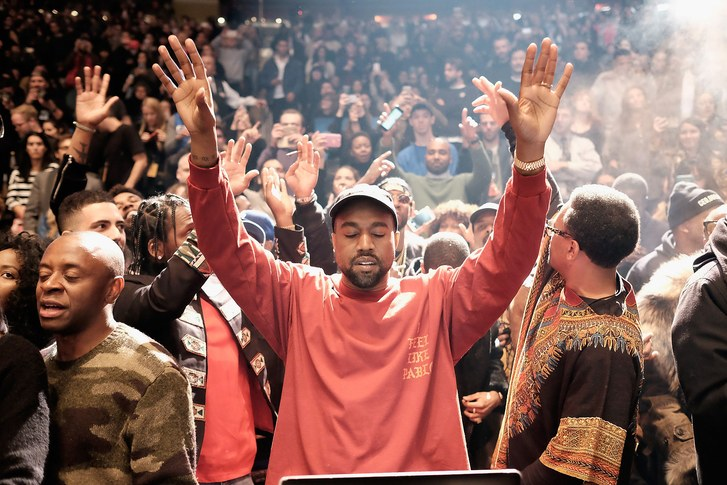

| My Ranking | Album Name | Year Released | World Sales |
| 1st | My Beautiful Dark Twisted Fantasy | 2010 | 2,900,000 |
| 2nd | The College Dropout | 2004 | 8,000,000 |
| 3rd | Graduation | 2007 | 6,500,000 |
| 4th | The Life of Pablo | 2016 | N/A (Stream Only) |
| 5th | Late Registration | 2005 | 7,800,000 |
| 6th | Yeezus | 2013 | 1,350,000 |
| 7th | 808s & Heartbreak | 2008 | 4,150,000 |

Kanye West is a critically-acclaimed rapper, producer, and performer, who has released 7 studio albums.
West was born in Atlanta, GA on June 8, 1977, and was raised in Chicago, IL.
Kanye West began his career in the mid-1990s by developing his unique production sound using classic soul samples and techniques.
After signing to mentor Jay-Z's Roc-A-Fella Records, West began writing his own songs in addition to producing them.
For years, Kanye West has been releasing music narrating his life story, many of his albums taking on key points that make up his timeline.
His earlier albums focused on his hustle, and his unique charisma, and later albums addressing personal relationships with his family and the public.
West is currently in Montana recording his upcoming album, as well as developing his line high fashion clothing and accessories.
Visit Kanye West's website to view tour dates and listen to music